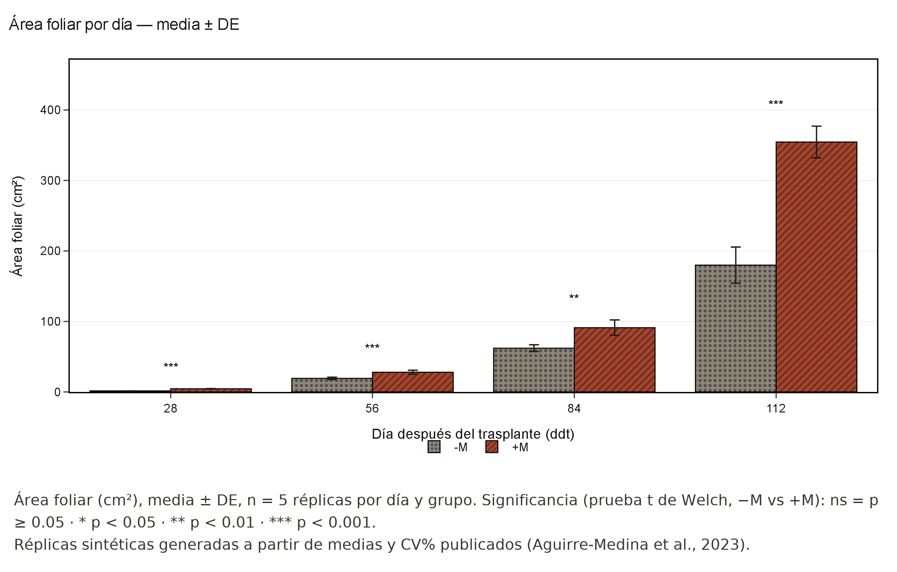
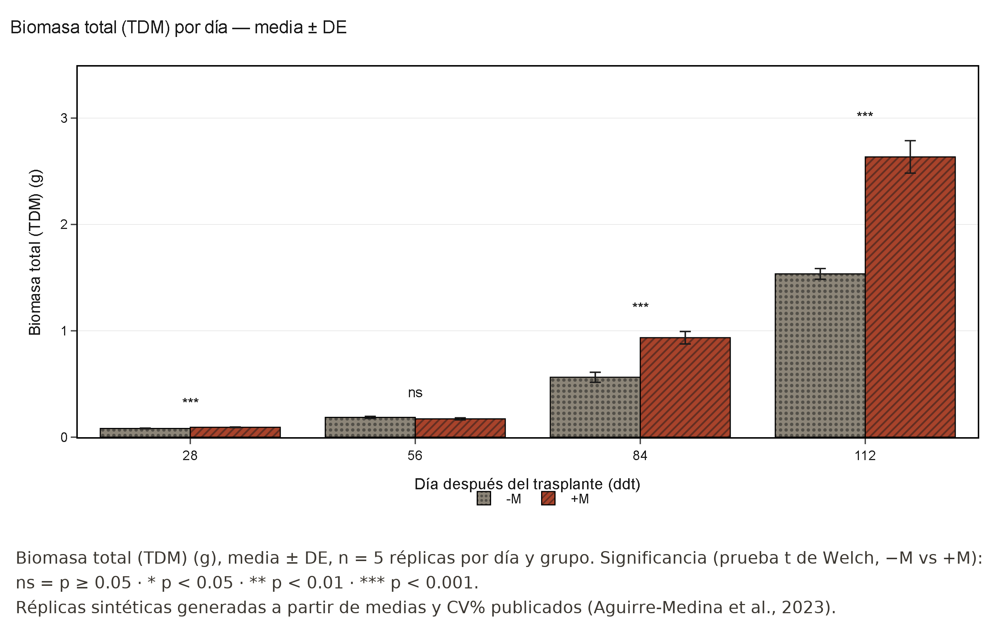

¿Puede una fórmula matemática mostrar el efecto de la micorriza en el café?
Comparamos plántulas de café con y sin hongos micorrízicos ajustando curvas de crecimiento a los datos — no solo mirando una tabla de promedios.
Qué hicimos
PASO 1
Tomamos datos reales publicados de crecimiento de café: 4 variables, 4 momentos, dos grupos (con y sin micorriza).
PASO 2
Ajustamos 3 modelos matemáticos de crecimiento a esos datos con la app Coffea IA (regresión no lineal).
PASO 3
Comparamos estadísticamente el grupo inoculado (+M) contra el grupo control (−M).
Qué encontramos
+97.1%
Área foliar de +M sobre −M a los 112 días — significativo en los 4 momentos medidos
+71.7%
Biomasa total de +M sobre −M a los 112 días — significativo en 3 de 4 momentos
ns
Altura y número de hojas: mayormente sin diferencia significativa con estos datos
Las gráficas

El área foliar de las plantas inoculadas se dispara sobre todo después de los 84 días.

La biomasa total sigue el mismo patrón: la ventaja de +M crece con el tiempo.
Lo que aún falta
Los datos originales solo publican promedios; usamos réplicas generadas estadísticamente para poder comparar los grupos.
Todavía no comparamos estos resultados con un experimento nuevo e independiente — la validación externa está en curso.
La ventana medida (28-112 días) no alcanza a mostrar si el crecimiento llega a estabilizarse.
Nota sobre los datos: la base es real (Aguirre-Medina et al., 2023), pero las réplicas individuales usadas en el análisis estadístico son sintéticas: se generaron para reproducir los promedios y la variabilidad publicados, porque el estudio original no reporta mediciones planta por planta. Por eso los valores p ilustran el método, no son evidencia experimental nueva.